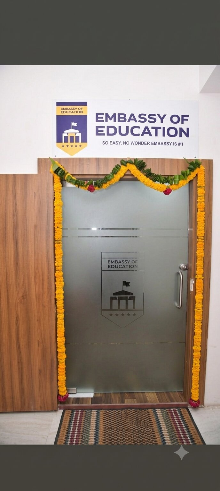
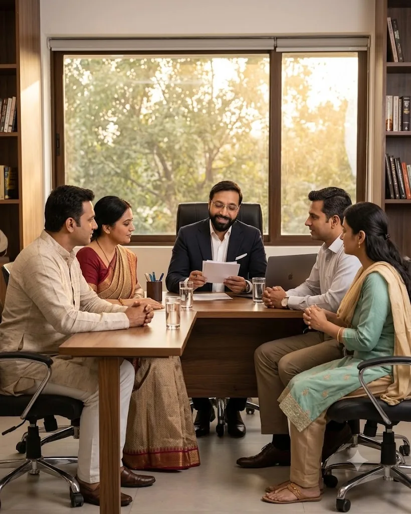
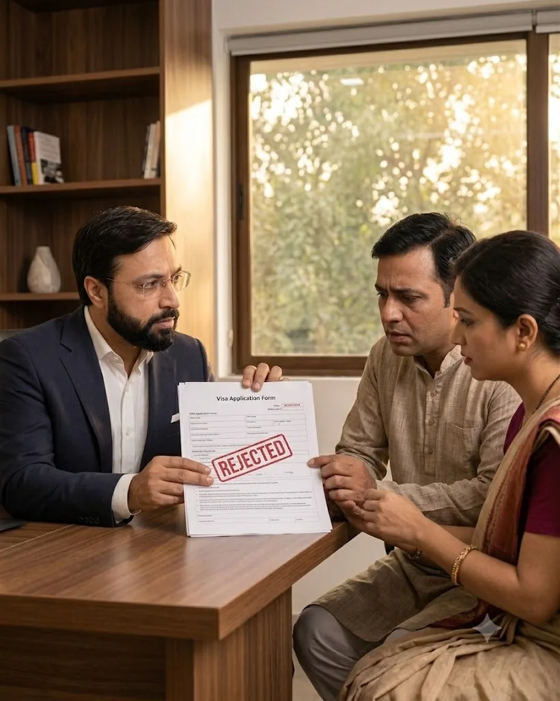

Purpose Logic
Does the stated reason for travel, study or business make practical sense for the applicant's profile, timing, duration and circumstances?
Embassy of Education reviews the observable facts of your case—DS-160 consistency, purpose logic, financial credibility, home-country context, refusal history and interview readiness—to help you make a better-informed next decision.
તમારો U.S. Visa refuse થયો છે? ફરી apply કરતાં પહેલાં માત્ર answers નહીં, પરંતુ આખા caseની consistency સમજવી જરૂરી છે.
A new application should be based on truthful facts, meaningful developments and a coherent case—not cosmetic edits, generic templates or rehearsed answers.
Complete a short self-check covering visa category, refusal history, DS-160 status, appointment timing and your main concerns.
The result may point toward DS-160 consistency, purpose logic, financial credibility, home-country context, refusal history or interview readiness. It does not predict a consular decision.
Open the full-page versionThe purpose is not to manufacture a story. It is to identify where truthful facts connect clearly—and where unanswered questions or inconsistencies may remain.
Does the stated reason for travel, study or business make practical sense for the applicant's profile, timing, duration and circumstances?
Do the DS-160, earlier applications, supporting facts, social information and interview recollection align?
Do income, savings, sponsorship, business activity and trip or study costs form a believable financial account?
Do employment, business, family responsibilities and future plans support the stated temporary purpose?
What patterns or material developments appear across previous applications, travel history, relatives and refusals?
Can the applicant explain the case truthfully, naturally, briefly and consistently without sounding memorised?
Begin with the service that matches your case stage. Complex matters may require a staged review rather than a single appointment.
Structured review of the previous application, interview recollection, DS-160, supporting facts and visible credibility gaps.
Explore the Refusal AuditFor tourism, family visits, parents visiting children, business travel and repeat-refusal cases.
Review B1/B2 StrategyCourse logic, academic progression, institution choice, funding, career plan and prior-refusal consistency.
Review F-1 StrategyFactual review across employment, education, relatives, travel, refusals and application history.
Explore DS-160 ReviewTruth-based preparation focused on listening, relevance, brevity, consistency and natural communication.
Prepare for the InterviewCourse selection, university strategy, funding planning, application support and visa preparation.
Explore Study in USA“Visa refusal cases deserve more than assumptions, generic templates or rehearsed answers. Every application has its own chronology, facts, risks and context. Our responsibility is to provide an honest assessment of what appears consistent, what may create concern and what must genuinely change before the next step.”
Our work is built around transparent case mapping, disciplined fact-checking and preparation that respects the applicant's real circumstances. When the responsible advice is to wait, strengthen the record or obtain qualified legal guidance, we say so.
Visa category, chronology, previous application and current stage.
Scope, urgency, records required and correct service pathway.
Purpose, consistency, finances, context, history and readiness.
What should be clarified, evidenced, corrected or genuinely changed.
Application consistency, personalised interview work and final review.
The final website should show the work product behind the consultation—redacted reports, consistency matrices, comparison sheets, interview-readiness plans and case timelines—without exposing private client data.
EOE case studies are published only after client consent and full redaction. Every story should show context, visible concerns, work completed, genuine developments and the verified outcome.
Purpose, duration, host facts, funding, family circumstances and individual applicant credibility.
See the case-study standardAcademic progression, course and university logic, sponsor facts, career plan and prior-answer consistency.
Explore F-1 case evidenceCommercial purpose, applicant role, invitation, funding, home commitments and refusal-history patterns.
Explore B1/B2 case evidenceAppointments are available at the Sharnam Fortune office and online. Bring previous DS-160 copies, refusal details, interview recollection and any material changes you want reviewed.



Our Insights library focuses on actual case patterns, official guidance and practical consistency—not generic “top tips.”
Understand the legal ground, what the refusal notice can and cannot tell you, and why reapplication requires a new decision.
Read the insightSeparate meaningful developments from cosmetic edits and rushed resubmission.
Read the insightWhy dates, employment, relatives, travel and prior applications must tell a coherent factual story.
Read the insightBegin with a confidential case-mapping session and understand the appropriate next step based on your facts, refusal history and application stage.
Mapping Session Fee: